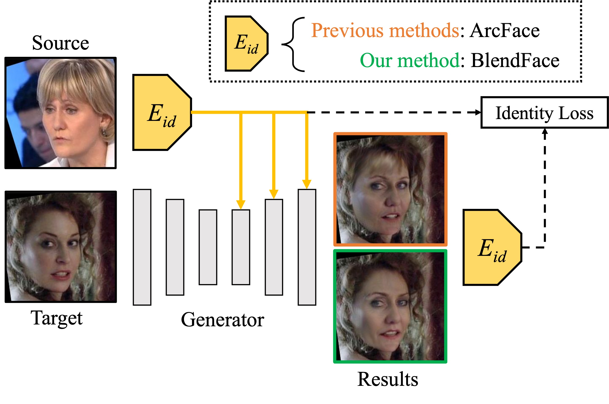

The great advancements of generative adversarial networks and face recognition models in computer vision have made it possible to swap identities on images from single sources. Although a lot of studies seems to have proposed almost satisfactory solutions, we notice previous methods still suffer from an identity-attribute entanglement that causes undesired attributes swapping because widely used identity encoders, eg, ArcFace, have some crucial attribute biases owing to their pretraining on face recognition tasks. To address this issue, we design BlendFace, a novel identity encoder for face-swapping. The key idea behind BlendFace is training face recognition models on blended images whose attributes are replaced with those of another mitigates inter-personal biases such as hairsyles. BlendFace feeds disentangled identity features into generators and guides generators properly as an identity loss function. Extensive experiments demonstrate that BlendFace improves the identity-attribute disentanglement in face-swapping models, maintaining a comparable quantitative performance to previous methods.
We examine identity similarity distributions between anchor and positive, negative, and swapped. The result shows that ArcFace underestimates the similarity for swapped images, resulting in the excessive identity guidance on face-swapping. We solve this problem by simply training ArcFace with swapped images to bridge the gap between positive and swapped.
After pretraining of BlendFace, we replace ArcFace with BlendFace to train better-disentangled face-swapping models.
Previous ArcFace-based face-swapping models generate inconsistent face boundaries between the swapped region and the original region. BlendFace boosts the consistency of the swapped faces while keeping the fidelity of the identity similarity.
@inproceedings{shiohara2023blendface,
author = {Shiohara, Kaede and Yang, Xingchao and Taketomi, Takafumi},
title = {BlendFace: Re-designing Identity Encoders for Face-Swapping},
booktitle = {Proceedings of the IEEE/CVF International Conference on Computer Vision (ICCV)},
year = {2023},
}